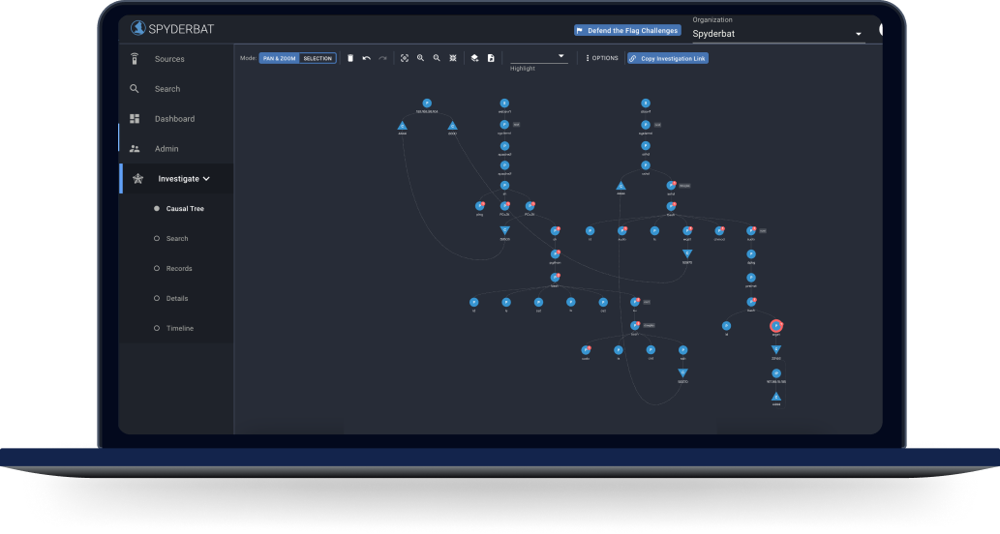

The Spyderbat Platform
", contentBlock:"Secure your Linux runtime environments with immediate and complete visibility to root issues.
", btnText:"Start free", btnAdd:"", imgHero:"
Scroll down to see more
Fast and accurate investigation automation
", contentBlock:"- Forward by industry analyst Richard Stiennon
- What is the detection of response to chasm?
- How does the Operations Plane establish all causal connections?
- How does a living graph of causal activity speed up investigations?